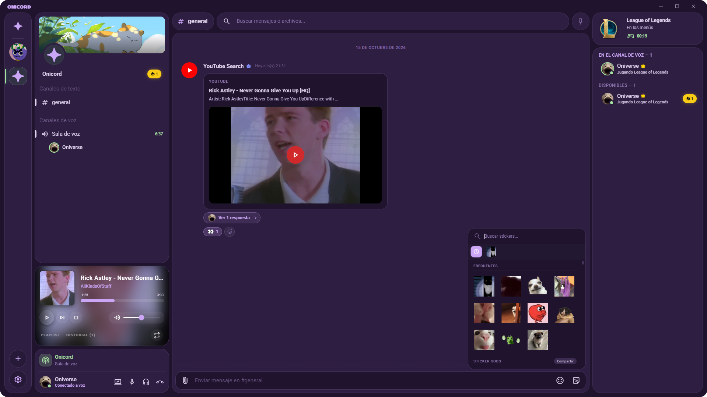

Abriendo Onicord...
Conectando de forma segura con la sala P2P.
¿No se abrió la aplicación automáticamente?
Abrir en OnicordSi todavía no tienes Onicord instalado en este equipo, descárgalo gratis abajo.
Comunicación sin servidores.
Privada, directa y de alta fidelidad.
Onicord es una aplicación de voz, video, pantalla compartida y música construida sobre redes P2P cifradas. Sin servidores centrales, sin recolección de datos y sin suscripciones.

Diseñado para la privacidad y el rendimiento
Todo el procesamiento y la transmisión ocurren de extremo a extremo entre los participantes de la sala.
100% P2P y Descentralizado
Conexión directa mediante enjambres DHT con Hyperswarm. Ningún servidor central registra tus conversaciones, direcciones IP o metadatos.
Voz Cristalina y Video WebRTC
Audio de ultra baja latencia con códec Opus optimizado, reducción de eco y canales de video fluidos adaptados a tu ancho de banda.
Pantalla Compartida a 60 FPS
Transmite tus aplicaciones, ventanas o partidas de videojuegos a tus amigos con resolución fluida y tasas de fotogramas configurables.
Música y Streaming Sincronizado
Servidor local integrado con soporte para yt-dlp. Escucha música colaborativamente en la sala sin interrupciones ni bots externos.
Ecosistema Modular de Addons
Extiende las capacidades de tus salas con mini-aplicaciones, widgets interactivos y comandos ejecutados en un Sandbox seguro y aislado.
Código Abierto y sin Cuentas
Licencia pública GPL-3.0. Tu perfil e identidad viven localmente en tu equipo sin requerir contraseñas, correos electrónicos ni rastreadores.
¿Cómo unirse a una llamada?
Tres pasos sencillos para empezar a comunicarte en segundos.
Descarga la aplicación
Elige el instalador oficial o la versión portable que no requiere privilegios ni instalación.
Configura tu apodo
Abre Onicord e ingresa el nombre con el que quieres que te reconozcan tus amigos.
Pega el código de sala
Haz clic en el enlace de invitación recibido o pega el código de 8 caracteres directamente.
Comienza a comunicarte en Onicord
Instalador Setup y versión Portable disponibles sin coste ni registros.